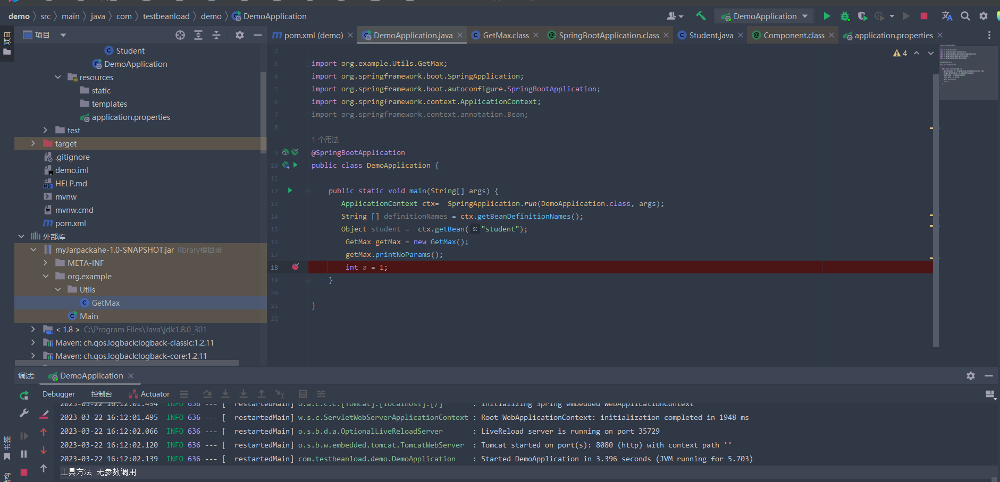
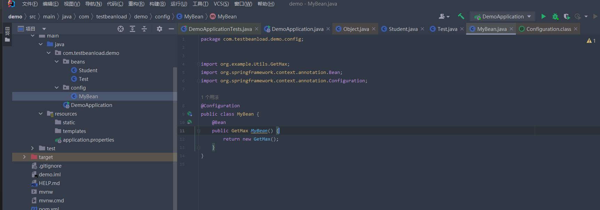
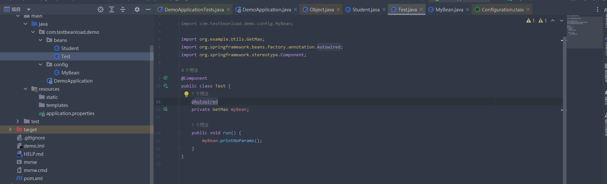
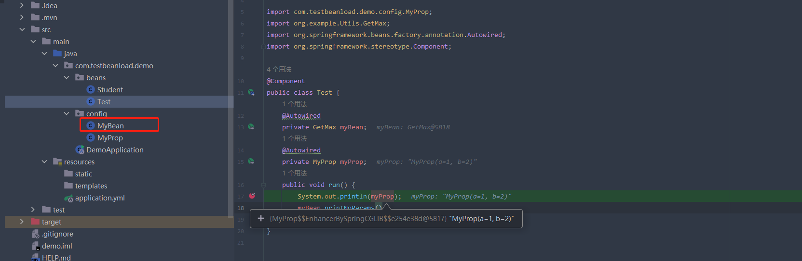

spring-boot
Spring-boot 快速开始
一.设置maven配置
1.配置镜像仓库 阿里云
1 | |
初始化项目 解决链接不上的 问题
https://start.spring.io ==> https://start.aliyun.com常见注解
注解 作用 @RestControl 等同于@Controller + @ResponseBody @ResponseBody 表示方法的返回值直接以指定的格式写入Http response body中，而不是解析为跳转路径。 @EnableAutoConfiguration 即把指定的类构造成对象，并放入spring容器中，使其成为bean对象 springboot启动的时候，会扫描该项目下所有spring.factories文件，底层也是springfactoriesLoader @SpringBootConfiguration @ComponentScan @SpringBootApplication 包含了EnableAutoConfiguration 、SpringBootConfiguration、ComponentScan @ConfigurationProperties 获取配置参数 @Configuration 标识它是一个配置类 通常配合工厂函数使用 特性
1.内嵌Tomcat、Jetty或者Undertow
2.简化配置 简化部署 简化编码 简化配置
核心配置 <dependency> <groupId>org.springframework.boot</groupId> <artifactId>spring-boot-starter-web</artifactId> </dependency>
spring boot 装配参考，
自动装配: https://blog.csdn.net/xueyijin/article/details/124853073
如何打包成1个包给别人项目依赖： https://blog.csdn.net/xueyijin/article/details/124852621
分几种场景
- springboot默认扫描路径，启动类所在的包， 带有
@Component或者@Configuration注解的类 - 引入第三方jar包(里面也有bean对象) 根据sdk里面 spring.factories
- 如果第三方包需要传参 @EnableConfigurationProperties
如下 自己封装了个GetMax类 里面有2个方法，一个无参 一个有参数 但是还是常规的 包引用方式

如何转化成Bean对象？
componentScan 需要第三方包里面写了@component注解
在SDK中的spring.factories加入该配置类的权限类路径，实际也很少，查看的时候实际绝大部分都是工厂函数
使用工厂函数注入 ，调用的A类的构造函数 ，返回注入的是B类的实例 ，AutoWird 注入B


普通YML配置 注入

spring-boot
https://godbuttton.github.io/2023/02/19/spring-boot/